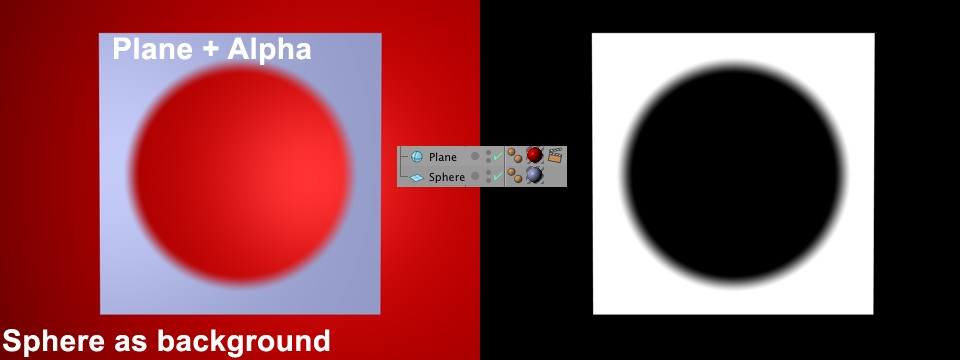
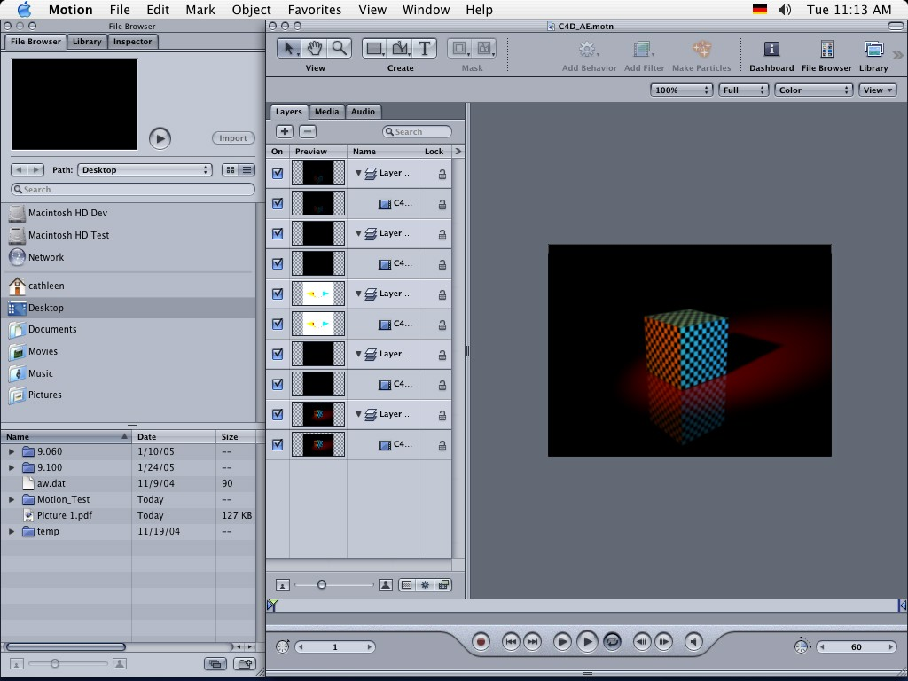

参考 CINEMA 4D CINEMA 4D Prime 渲染菜单 编辑渲染设置
Function available in CINEMA 4D Prime, Visualize, Broadcast, Studio & BodyPaint 3D
渲染设置 基本 输出 保存 多通道 抗锯齿 材质覆写 选项 立体 Team Render保存
 常规图像
常规图像
保存
当渲染到图片查看器时自动保存图像或动画。
文件…
你可以在这里输入完整的路径，或者在右侧的路径按钮上点击，打开系统对话窗来选择文件夹。
如果你只输入了一个名称而没有路径，图片或者动画会被保存到场景的文件夹中。
RELEASE 17
要使用相对路径，请在路径名称前加上一个英文句点：
- ./xy/beauty 会保存一个名为 beauty 的文件到场景文件路径下的 xy 文件夹。
- ../xy/beauty 会调到场景文件所保存的路径的上一级。在这个示例中，一个名为 beauty 的文件会被保存到名为 xy 的父级文件夹中。
在设置路径时，记住以下几点，避免从一个操作系统移动到另一个时出现文件名问题：文件名最多使用22个字符。例如，Mac OS 9.1 有如下限制：文件名长度最大为31个字符，其中4个字符用作扩展名（如 *.tif）、5个字符用作输出帧序列时的序号（如 _0023）。同样，只在文件名中使用如下字符： A - Z、a - z、0-9、_。一些特殊字符也是有效的，但是通常应该避免使用特殊字符来保证最大的兼容性。
提示：
如果你想要文件名和路径名自动参考工程名或设定的渲染分辨率，可以使用
可变路径和文件名，这样每次渲染不同分辨率时你就不用修改文件名或路径名了，还可以避免覆盖已有的文件。
格式
选项…
这个按钮只有当格式设置为 AVI 影片（Windows）或 QuickTime 影片（Windows 和 Macintosh）时才可用。
点击这个按钮会打开一个对话框，在这里可以进行各种编码和其他设置。如果没有打开对话框，请检查是否安装了最新版本的 QuickTime。
如果在 Windows 上安装了 QuickTime，则会有额外的几种可用的格式，列表如下。根据选择的格式，点击右侧的“选项”按钮可以对格式的选项进行修改（例如为视频格式使用 JPEG 压缩）。
以下应用于 RLA/RPF：
RPF 格式是一种由 RLA 发展而来的格式。这两种格式都可以用来给图像分配多个通道，便于在 After Effects® 或 Combustion® 等后期合成软件中使用。
RPF 格式包含如下通道（RLA 只通过 Coverage 包含 Z 通道）：
Z
相机与对象的距离信息，用来制作景深效果。
对象
在后期编辑中可以使用不同材质。
UV 坐标
UV 坐标的信息，用来在后期编辑中将纹理贴图置入到正确的地方。
正常
关于对象和纹理的方向信息。
无限颜色
对象颜色的信息，可超过 RGB 色域。
覆盖
对象边缘的抗锯齿信息。
对象标识（仅 RPF）
Enables the clear identification of objects.
颜色（仅 RPF）
对象的颜色信息。
透明度（仅 RPF）
对象的透明度信息。
子多边形权重
亚像素的颜色信息。
子多边形蒙版
链接到对象的亚像素的信息。
深度
设置每个颜色通道的位深，可以选择 8 位/通道（24 位色）、16 位/通道（48 位色）或 32 位/通道（96 位色）。每种格式支持的颜色深度和其他信息参见此表。
HDRI 格式
提示：
我们接下来会讨论 HDR 图像，但是这并不意味着只单单讨论 HDR 这一种格式，也包含了 OpenEXR 和其他可以进行高动态范围调节的图片格式。
CINEMA 4D 的标准版本可以输出、载入和渲染 HDR 图像（如在反射中使用 HDRI 纹理）。
它可以让你在输入 CINEMA 4D 图像时最大程度地利用颜色和亮度。进一步说，CINEMA 4D 的渲染相比传统 RGB 图像有更高的颜色和亮度（98位/像素）。
将图片渲染为 HDRI 格式则没有这些限制。
以下格式可以读取这种颜色深度：
- Radiance (HDR)
- OpenEXR
- BodyPaint 3D（用32位/通道渲染）
- TIFF（用32位/通道渲染）
- PSD（用32位/通道渲染）。这些图片只可以用 Photoshop CS2 及以上版本打开。
与可以处理这些格式的软件一同使用会很有帮助。
具体如下：
- HDR 格式在合成的时候可以作为图片处理格式。虽然普通的屏幕或打印机不能显示这种颜色深度，但是可以使用传统的颜色深度。
传统颜色深度的一个缺点是亮度限制。举个例子，一个 RGB 色值为255，255，255可以显示很好的白色。假设你想要在后期处理软件中调暗一张包含白色区域的图像，如一个被穿过窗户的阳关照亮的表面。这时白色的区域会变成灰色，然而这种情况下应该开始显示表面的真实颜色。
 上图：原始图像；中图：输出为 TIFF 在Photoshop 中调暗；下图：原始图像输出为 32位，并用合适的软件调暗。
上图：原始图像；中图：输出为 TIFF 在Photoshop 中调暗；下图：原始图像输出为 32位，并用合适的软件调暗。
如你在上面的示例中看到的，HDR 图像可以调暗（如使用 CINEMA 4D 的曝光设置），而不用担心白色表面像传统图片格式一样变灰。上面的场景是被带有非常明亮灯光（400%）的特定 GI 照亮的。
HDR 图像可以表述为一种无法用传统技术描述的颜色数据。
当你在图片查看器或在编辑视图中将图像渲染为 HDR，会使用一种特殊的 HDR 抗锯齿。初看起来图片有很多缺陷，这是因为实际上图片的显示必须降低到显示器的色彩范围。如果使用传统格式进行渲染，图像的抗锯齿则会很完美，因为颜色的深度被降到了8位或16位时，抗锯齿会发挥作用。32位的抗锯齿在渲染时没有颜色限制，也就是说，一个平滑的像素可以有一个远远高于100%的亮度值，因此这时会显示为白色。正确的32位抗锯齿是不可见的，但是在内部是存在的。
- HDR 图像格式（尤其是 HDR 格式：HDR（Radiance）和 OpenEXR）非常适合用在有锐利反射的渲染中。例如，只要把 HDR 图像放在一个天空对象的发光材质通道中，CINEMA 4D 就会在渲染时把高动态范围的亮度纳入计算。
- HDR 图像格式（尤其是 HDR 格式：HDR（Radiance）和 OpenEXR）还适合作为图像基础照明使用，即通过 GI 照亮场景，带有特定的纹理，而不使用灯光光源。
经典 HDR 格式
两种经典（“经典”这个词在快速发展的 IT 世界中是相对的）HDR 格式，Radiance (HDR) 和 OpenEXR，都用在很多渲染流程中，现在都被 CINEMA 4D 支持。
Radiance HDR 是这两种格式中较老的，并且很可能最终被 OpenEXR 所取代。虽然 OpenEXR 的动态范围比 HDR (Radiance) 要小（这在日常工作中是无关紧要的，否则 OpenEXR 不会用在这么多好莱坞影片中），但它可以被压缩为一个小得多的文件。
Radiance (HDR)
HDR 可以保存在一个特殊的32位/像素的模式。Radiance HDR 拥有巨大的动态范围，比自然世界还大得多，这也就是为什么 HDR 文件经常很大，尽管如此，大部分 HDR 纹理库在 Radiance (HDR) 格式中是可用的。
OpenEXR
这个格式是由工业光魔（ILM，Industrial Light & Magic）开发的，并且有较高的压缩率，尽管它有高动态范围。
从 CINEMA 4D R13 开始，有多通道的文件也受到支持了。它与真正的多通道文件不同，后者包含多个通过混合模式相互叠加的图层，而 OpenEXR 只包含通道而没有混合模式（从这些通道创建正确的图层必须使用合成软件来完成）。但是 CINEMA 4D 将会尝试在导入时基于通道名称创建图层。
点击选项会出现一些可用的保存选项：
我们不会用很多技术上的细节吓到你，而是给你一个通用的描述。压缩模式有以下几种：造成大量信息损失、造成颜色信息损失或无损（下面列表中最上面的5种），以及包含全部动态范围。
尤其是对于需要大量或频繁编辑的图像来说，不应该16位浮点压缩，因为它会很快导致不精确或色彩范围限制。
选择哪种压缩方式应该通过测试来决定，在质量、文件尺寸和编辑速度之间权衡选择最可以接受的方案。
名称
许多编辑程序支持图片序列。但是它们各自遵循不同的命名惯例。
一些程序需要文件名以数字结尾，其他一些则是扩展名。一些程序只能处理三位数的图片。
使用这个菜单可以设置你的编辑器所要求的序列编号和/或字母样式。在下面的示例名称中，0000 表示任意数字，TIF 表示任意三字母的扩展名。
Name0000.TIF 示例：Test1234.JPG，
Name0000 示例：Test1234，
Name.0000 示例：Test.1234，
Name000.TIF 示例：Test123.TGA，
Name000 示例：Test123，
Name.000 示例：Test.123。
图像色彩特性
通过这项设置你可以定义图像/纹理中要嵌入哪种色彩配置文件。在 R12 版本之前，CINEMA 4D 会自动使用 sRGB 色彩配置文件进行保存。现在，它可以设置为任何想要的色彩配置文件，不过你应该只有真正需要的时候才去改变这项设置。
注意，许多程序不能读取色彩配置文件（如 Windows 7 只能读取部分色彩配置文件）。
当与多通道一起使用线性工作流程时，我们推荐在渲染时最少使用16位深度。如果无法实现，请禁用线性工作流程选项来恢复正常的 CINEMA 4D 属性（因为多通道是同线性配置文件保存的，QuickTime 无法嵌入色彩配置文件，并且在导入到外部程序时会发生读取错误）。
更多色彩管理的信息参见这里。
通常，默认的 sRGB 就是正确的配置文件。
点击右侧的按钮会打开下列菜单项以供选择：
禁用颜色管理
不会嵌入色彩配置文件（在文件打开是会根据工程设置或位图着色器设置进行读取）。
载入/保存
你可以用它们载入一个色彩配置文件，或保存一个已有的色彩配置文件。这些文件的扩展名为“*.icc”。如果在这里加载了一个图像，则会使用其色彩配置文件。
从显示器中载入
你可以使用显示器（硬件）的配置文件，但是不推荐这样做，因为你的显示器的配置文件几乎不会与另一台相匹配。
sRGB
以 sRGB 色彩配置文件保存图像。
线性
以线性色彩配置文件保存图像。
Alpha 通道
如果启用了这个选项，在渲染中会计算一个预叠加的 alpha 通道。
Alpha 是一个与彩色图片有相同分辨率的灰度图，alpha 通道中，一个白色像素表示彩色图像中该处的的像素是显示的，而黑色像素表示不显示。
你可以使用 alpha 通道在视频软件中进行合成。例如，你扫描了一张机场的照片，想要在它的跑道上渲染一台飞机。那么你可以在 CINEMA 4D 中渲染一架带有 alpha 通道的飞机，然后在你的合成软件中使用 alpha 通道来去掉飞机以外的部分，这样就可以显示出机场了。Alpha 通道图片的边缘是抗锯齿的，可以确保在合成图片中的过渡是平滑的。
预叠加的 alpha 通道有一个明显的缺点，如下图所示。
 从左至右：渲染的图片、alpha 通道、结果。
从左至右：渲染的图片、alpha 通道、结果。在示意图中，alpha 通道产生了一条深色的接缝，这是因为图像和 alpha 通道是通过抗锯齿渲染的，根据定义，彩色图片和 alpha 通道必须进行叠加，因此黑色被计算了两次。你可以通过使用“直接 Alpha”选项来避免这个问题。注意，直接 Alpha 只适合用来合成，对传统图片来说它们并没有什么作用。
如果你在场景中使用了天空、地面、前景或背景，整个 alpha 通道是被遮住的。如果你需要 alpha 通道，请不要使用上述的任何对象。
TARGA、TIFF、PICT、PSD 和 QuickTime 影片这些格式是自动包含 Alpha 通道的。如果你启用了分离 Alpha 或选择了一个不同图片格式，alpha 通道会单独保存为一个图片，这些文件在其文件名前会加上A_，如 A_room.tif，分离的 alpha 会被保存为 TIFF 格式。
Alpha 通道可以包含到一个影片中，只要选择的编码支持 alpha 通道。
直接 Alpha
如果你的合成程序支持直接 alpha，你可以使用这个选项来避免预叠加 alpha 中产生的深色接缝。注意，直接 alpha 只适合用来合成，对传统图片来说它们并没有什么作用。
从左至右：渲染的图片、alpha 通道、结果。
提示：
不要在你的命名习惯中使用引号（“”或‘’）。
注意！
CINEMA 4D R11.5 之前的版本使用不同于 alpha 通道输出的方式来处理透明表面（通过 alpha 蒙版或
透明度通道）。
示例：一个带有 alpha 蒙版的材质可以用来在平面上创建一个孔，这个平面位于一个巨大的作为背景的球体里面。渲染结果如下面的左图所示。假设你现在想要输出场景为一个 alpha 通道，其中只包含带孔的平面。要实现这一点，给背景（也就是球体）添加一个合成标签。在先前版本的 CINEMA 4D 中，你要做的是禁用摄像机可见选项。在 R11.5 及以上版本中，你还需要禁用透明度可见选项来生成 alpha 通道图片，如下面的右图所示：
要生成如右图所示的 alpha 通道，上面提到的两个选项都必须在合成标签中被禁用。
这么做的原因在于渲染器的优化，现在渲染器会使用光线跟踪来计算平面透明表面（包括 alpha 蒙版）。光线跟踪必须通过合成标签明确地指定，位于透明对象后方的物体不可见。
分离 Alpha
Alpha 通道通常包含在支持 alpha 通道的图像格式中，这也就意味着它们是作为图像文件的一部分来保存的。但是，如果你想要将 alpha 通道保存为一个单独的文件，可以启用这个选项。这时除了彩色图片（如 room.tif），你还会得到一个包含 alpha 通道的文件（如 A_room.tif）。
分离 alpha 通道文件会被保存为与渲染图像相同的格式（格式）。
8位抖动
抖动是一种将随机图案添加到颜色中来防止色带的过程。虽然抖动增强了图像质量，但是它也增加了文件的尺寸，尤其是对于网络图形，你可能需要禁用抖动来减小图像文件体积。
包括声音
如果选择了上面的一种视频格式，则可以添加声音合成到视频中。
提示：
注意，这在 Team Render 中是无效的！
QuickTime VR 选项
You can use the options on this page to create QuickTime VR panoramas and QuickTime VR object movies.
Lens effects cannot be used with QuickTime VR movies.
If the optional Team Render module is installed, note that QuickTime VR object and panorama movies cannot be rendered using Team Render or using the Physical Renderer.
QuickTime VR technology combines the frames of a 360° horizontal pan in a seamless fashion that enables you to move freely around the virtual scene. You can also zoom.
For these settings to become available, you must set Format on the Save page to QuickTime VR Panorama or QuickTime VR Object.
生成文件
虚拟场景
Cinema 4D creates a ready-to-view QuickTime VR panorama or object movie that you can view in QuickTime as soon as it has been rendered and saved.
中等
Cinema 4D creates a panoramic picture or individual object film pictures that you can, say, edit further using Apple’s QuickTime VR tools.
两者
Cinema 4D creates a ready-to-view QuickTime VR film as well as a panoramic picture or individual object film pictures that you can process further using Apple’s QuickTime VR tools.
苹果建议：
These are Apple’s recommended settings (from The QuickTime FAQ):
- Use focal lengths of 15 mm, 28 mm or 35 mm.
- Do not use fish-eye lenses.
- For interior shots, use a 15 mm lens. This gives you a vertical visibility range of 97°.
- Use a 15 mm lens. This lets you reduce the number of shots in one pan to 12.
- If you are using 35 mm lenses, create additional rings for the view upward and downward.
- For determining the number of frames in a horizontal ring, two adjacent frames should overlap by 30% to 50%.
水平步幅 [1..1000]
开始角度 [-∞..+∞°]
结束角度 [-∞..+∞°]
When the output format is QTVR Object, here you can specify the number of horizontal steps the camera takes as it moves around the object. For either panorama or object modes, it is also possible to specify Start Angle and End Angle.
垂直步幅 [1..1000]
开始角度 [-90..90°]
结束角度 [-90..90°]
These settings apply only to QTVR object movies. Here, Steps specifies the number of rings. A value of 1 is sufficient for a simple object rotation. However, if the viewer should be able to tilt the view, use more rings. Usually, an odd value is best, since it generates as many rings above the horizon ring as below it. To specify the tilting range, enter values in the Start Angle and End Angle boxes. The maximum range is -90° to +90°.
There are two built-in resolutions for QuickTime VR on the Resolution drop-down list (Output page): 1248 x 384 QTVR and 2048 x 768 QTVR. Also on the Output page, set Film Format to Automatic. You can type in your own resolution using the input boxes to the right of the Resolution drop-down list. Ensure that the values you enter are divisible by 4.
术语
A panorama is a 360° all-round view of the environment as seen from the camera. The QuickTime VR movie lets the viewer spin around his or her own axis to explore the panorama freely. The camera can also be tilted up or down.
When a QTVR panorama is selected on the Save page, only Start Angle and End Angle are available in the Horizontal and Vertical Settings.
A QuickTime VR object movie enables you to rotate an object interactively using the mouse. For a smooth object movie, try 36 horizontal steps from 0° to 360° and 19 vertical steps from 90° to -90°. This provides good coverage of the object and allows free rotation.
默认 X 分辨率 [2..4000]
默认 Y 分辨率 [2..4000]
These settings define the output resolution of the QuickTime VR movie. The default value is 320 x 240 pixels.
The resolution of the original material from which the QuickTime VR movie is finally rendered is defined by the Resolution setting on the Output page. The Y resolution of the original material should be at least 1.6 times greater than the Y Default Resolution setting.
For a QuickTime Object Movie, place the object at 0,0,0 (world coordinates) and ensure the object is selected in the Object Manager.
If Generate is set to VR or Both, you will create a QuickTime Movie of all frames in the sequence.
When you render QTVR panoramas and QTVR movies, the following limitations apply with regard to antialiasing:
The Max Level parameter determines the maximum antialiasing for colors and edges.
The Max Level cannot be exceeded, even if higher settings are specified in Compositing tags. Compositing tags work within the Min Level to Max Level range only.
The render time depends largely on the Max Level setting. For this reason, avoid using a setting higher than 4x4.
多通道图像
保存
Multi-pass rendering makes it easy for you to post-edit your renders in compositing software su�ch as Adobe After Effects, Photoshop and Combustion. With Multi-Pass you can split the Cinema 4D rendering into separate layers such as shadows, reflections, highlights and each separate light source. You can save the layers in RLA, RPF, Photoshop (PSD) and BodyPaint 3D (B3D) format.
Suppose you have rendered a complex movie and the reflections look too strong. With Multi-Pass, there’s no need to re-render the Cinema 4D scene. Instead, simply reduce the opacity of the reflections layer in your compositing package. Or why not include alternative lighting setups in the same rendering? You will then be able to select the best setup during post-editing.
Multi-pass is ideal for trying out various lighting setups for your rendering The setups will be rendered more quickly as a single Multi-Pass file than as separate projects.
提示：
When rendering Multi-Pass via Team Render a relative path, not an absolute path must be defined.
文件
This is where you set the save path for the file.
Multi-layer files require much more space than single-layer files. Prior to rendering, check that you have sufficient storage space, especially when rendering Multi-Pass animations.
A relative path must be entered here when rendering with Team Render.
格式
选项…
This button is greyed out unless the format chosen has extra options. Click Options to access these.
文件
This path defines where the rendered still or animation will be saved. Note for animations in particular that a location is selected that offers enough disk space for the entire animation.
提示：
Use
可变路径和文件名 to automatically associate file and path names with, for example, the type of Multi-Pass that is defined.
See also File above regarding file names and paths.
To output the passes in Photoshop 7 format, set Format to Photoshop (PSD), click the Options button and enable the Photoshop 7 option in the dialog that appears. This will ensure the Linear Dodge blend mode is used where appropriate.
深度
Sets the channel depth to 8, 16 or 32 bits.
多层文件
If this option is enabled, all layers are saved in a multi-layer file. In addition, you must set Format on the Output page to Photoshop (PSD), BodyPaint 3D (B3D) or TIFF. If the option is disabled, Cinema 4D creates a separate file for each pass using the Format setting on the Save page. A suffix is added to each of the filenames to differentiate them.
The image may look different when viewed in another application depending on which blend modes are supported. This can be due to non-existing mix modes or other factors.
提示2：
Note that 32-bit multi-layers can be problematic in conjunction with a disabled
线性工作流程 option due to the fact that Photoshop can only import *.psd files correctly but cannot display them correctly. As soon as 线性工作流程 is enabled or other bit depths are used, it will work correctly.
图层名称作为后缀名
If your chosen format does not support multi-layers, each layer will be saved as a separate file. If this option is enabled, the name of the layer, such as _diffuse or _refraction, is added after the filenames.
RELEASE 17
用户定义层名称
If this option is enabled, the Multi-Pass names that you defined (double-click on the Multi-Pass name to rename it) will be used instead of the default Multi-Pass names.
直接 Alpha
This option is only available if you have activated the Alpha Channel option. Whether or not you activate Straight Alpha does not play a role.
With the Straight (Unmultiply Alpha) (Multi-Pass tab) option you define whether or not the corresponding Multi-Passes should be pre-multiplied with reference to the alpha channel that is saved.
合成方案文件
 A compositing project file is made up of multiple layers. Each layer can be edited separately.
A compositing project file is made up of multiple layers. Each layer can be edited separately.
Cinema 4D supports the following video compositing programs:
- Adobe After Effects (CS3 or higher): Multi-Pass files, camera data, lights and Null Objects (see also After Effects with regard to the various exchange possibilities).
- The Foundry Nuke (tested for v 6.3 and higher): Multi-Pass files. Camera data, lights, objects via separate FBX file.
- Apple Final Cut Pro (4.0 or higher; Cinema 4D Mac version only): Multi-Pass files.
- Apple Motion Version 3: Multi-Pass files, camera data, lights and objects as NULL objects.
- Appke Shake Versions 3.5 and 4: Multi-Pass files.
- eyeon’s Digital Fusion from V5.0: Multi-Pass files.
Cinema 4D can render various Multi-Passes and save them as separate files (bitmaps or videos). The passes can then be loaded into one of the compositing packages listed above. In the compositing package, you can then edit the passes separately and apply a wealth of effects to them.
Other compositing applications can open the file without plugins.
You can also export Cinema 4D’s camera and lights, including animation, and edit them in After Effects or Combustion.
The following camera data is supported:
- Camera position.
- Camera orientation.
- Focal length.
- Camera to target distance (provided the Cinema 4D scene used a target camera).
The following types of light are supported:
- Point.
- Parallel.
- Spot.
导出多通道文件
To export the Multi-Passes from Cinema 4D:
- In the Render Setting, on the Multi-Pass page, use the Channels drop-down list to choose which passes should be rendered. Disable the Multi-Layer File option (each pass must be saved as a separate file) in the Save tab.
Set Format to the desired file format, such as QuickTime Movie.
Set Path to the path where the passes should be saved.
- Make sure that the Save option in the Multi-Pass sub-menu is enabled and choose your compositing application. Render the image or animation. Select the same save path as in the 常规图像 sub-menu so the compositing file lands in the same directory as all related files.
If Relative is enabled (Save page), the start and end time of the Cinema 4D animation will also be transferred (with After Effects, version CS3 or higher is required for this functionality). Otherwise, the animations will always begin at frame 0 in the compositing program.
Save FBX File
If you create a compositing file for Nuke, it will not contain 3D information for cameras, lights or objects. If this option is enabled, this information can be extracted from a FBX file. A separate FBX file will then be written.
Pressing the 保存方案文件… button lets you create a compositing file without having to render the entire scene. However, this only makes sense if all passes have already been rendered. For example, if you have already rendered a complete animation using Team Render, including all Multi-Passes, you can press this button to generate the correct compositing file.
- Import the compositing file put out by Cinema 4D into your compositing application.
To import the Multi-Passes into your compositing package:
The project in Cinema 4D.
After Effects
提示：
Note that After Effects is only designed for use with the
exchange described above in point 2.
In After Effects, import the .aec file (File / Import / File).
 The project in After Effects.
The project in After Effects.
For After Effects you must copy the following plugin (located in the Cinema 4D program directory in the "Exchange Plugins/aftereffects/importer" folder; select the one that corresponds to your operating system and After Effects version) into the After Effects plugin directory (if this does not exist, use the "Effect" folder):
- PC: "C4Dimporter.aex"
- Mac OS: "C4Dimporter.plugin" (may have to be unzipped first)
Other compositing applications can load the data without a plugin.
Additional functionality:
- Shadow density assigned to light sources will also be exported (animated)
- The "render status" in the Object Manager will be taken into consideration. In the following example, only Object 2 will be exported:
- All existing cameras will be exported (if not disabled by the "render status" described above)
- XRefs are supported (i.e. will be exported)
- Logical naming of lights and directories in After Effects
- See also here
- Stereoscopy is supported: numerous stereoscopic channels and Multi-Passes (see also Stereoscopy) will be loaded into After Effects in the correct combination and clearly named.
- The Stage object will be evaluated with regard to cameras.
See After Effects for more information about the connectivity of After Effects and Cinema 4D.
Color, shadow density, angle and intensity animations of light sources are supported Unicode is supported.
提示：
Make sure that the "Linear" Working Space color (which only works if a work space color exists; this should be set to sRGB) is enabled in After Effects when using
线性工作流程.
Motion

Nuke
Open the corresponding *.nk-file:
Final Cut Pro
In Final Cut Pro, import the .xml file (File / Import / XML) and ignore the alert that appears.
 The project in Final Cut Pro.
The project in Final Cut Pro. Digital Fusion
Use the Open command to open the *.comp file exported from Cinema 4D.
包括时间线标记
If you have set Marker in the Timeline, these will be included in the compositing file, including their names.
包括3D数据
Use this setting to define whether cameras, lights or objects should be exported. Objects other than lights and cameras will be exported as Null Objects if an External Compositing tag has been assigned to them (see below).
相对
Let’s say your scene contains two animated cameras. The first camera is animated from frame 20 to frame 50, the second from frame 2 to frame 117. The 相对 setting would be used to decide between which frames the animation should run in the compositing application: Between 20 and 50 or 2 and 117 (相对 active) or between 0 and 30 and 0 and 115 (相对 not active, animation begins at frame 0). Of course this setting is not restricted to animated cameras.
Movies will be imported faster than picture sequences.
The compositing programs will import the composition correctly provided that the compositing program is on the same computer as Cinema 4D. When importing into After Effects, the compositing project file must be in the same folder as the passes; otherwise, the picture sequences or videos must be replaced manually.
General Information
Compositing programs import compositions with no further ado as long as Cinema 4D and the compositing program are located on the same computer. Otherwise the compositing file and all files linked must lie in the same directory (applies to After Effects) or the images/videos must be replaced manually in the compositing program.
Limitations
- NET cannot write the compositing project file. For network rendering, generate the project file manually by clicking the Save button on the Save page of the render settings. You can save the project file at any time — even before you have rendered the passes. Missing passes are represented by stand-in frames in After Effects, which you can replace at any stage.
- QTVR cannot be used with compositing project files (QTVR does not support Multi-Passes).
- B3D image sequences are not supported.
保存
Define whether or not compositing files should be saved (this does not work when rendering via Team Render).
目标程序
Select your target compositing application. Cinema 4D will automatically output the compositing files in the correct format.
保存方案文件…
Lets you create "compositing" files without having to render the entire scene. However, this only makes sense if you have already rendered all passes.
If you have already rendered a large animation, incl. Multi-Passes, using Team Render, clicking this button will create the corresponding compositing file.
Note, however, that the renderer must still be started in the background, which can take quite a while when using the Physical Renderer. You can work around this by using the Standard Renderer, which requires a much shorter preparation time.